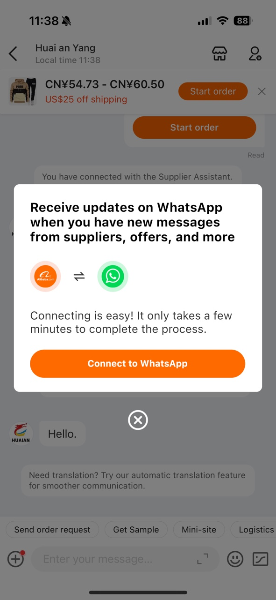
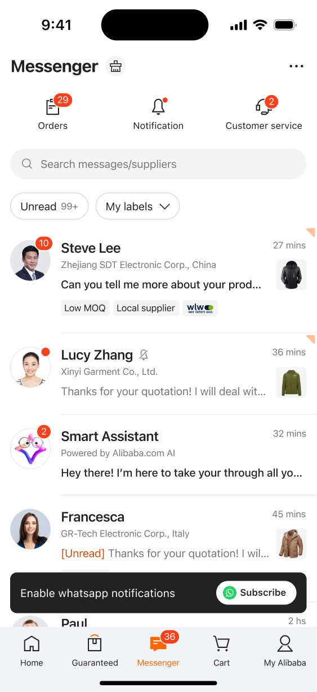
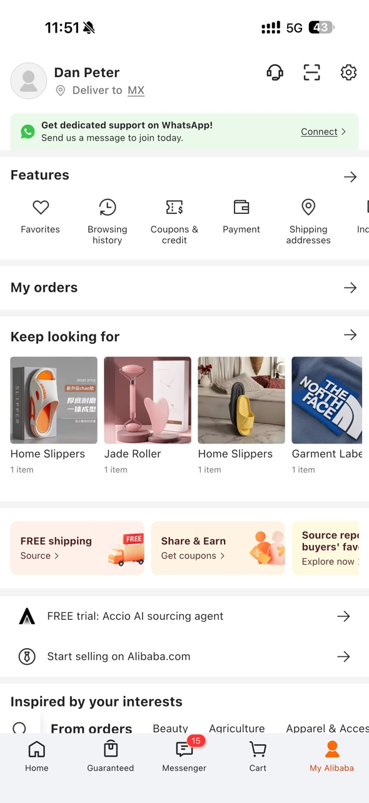
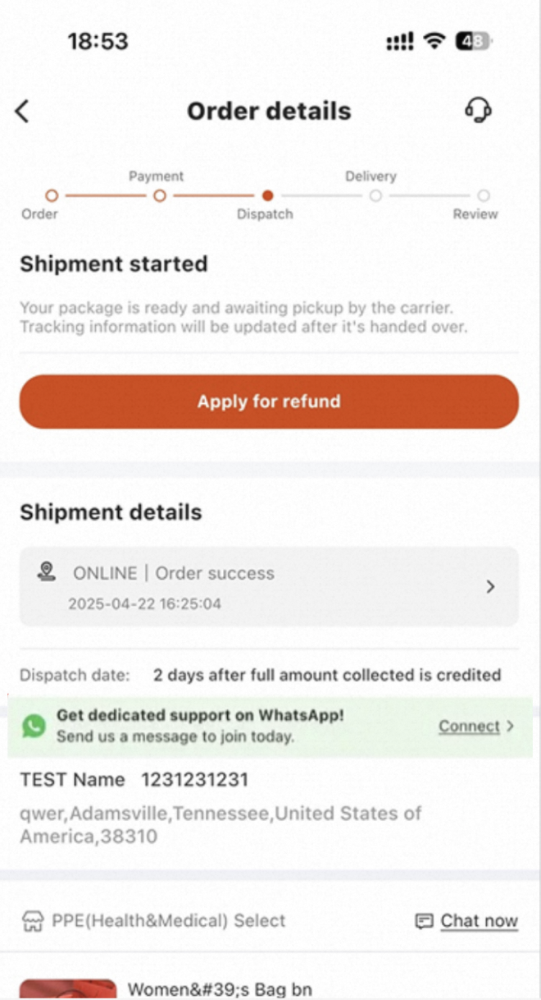
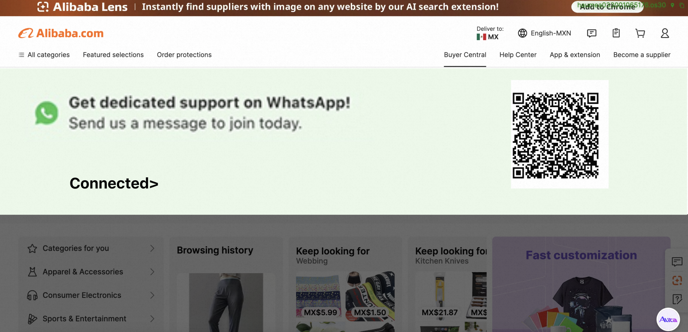
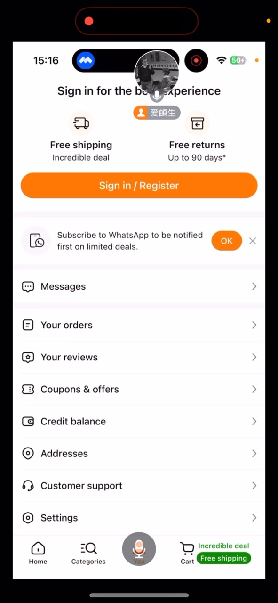
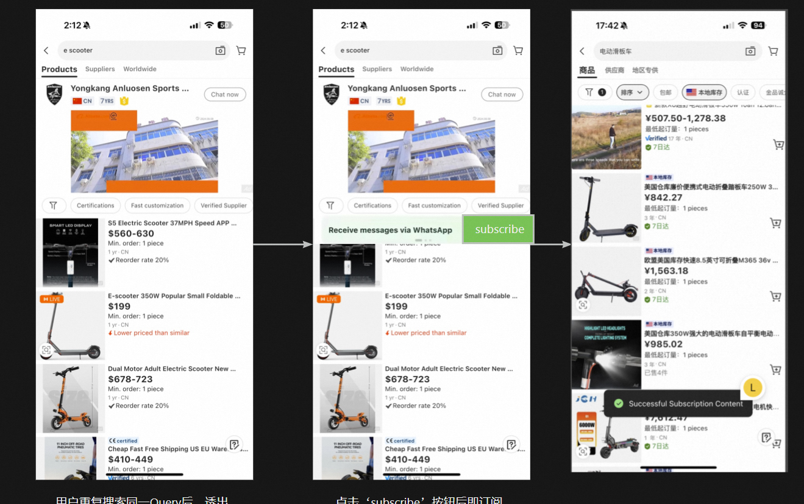

国际站（Alibaba.com）WhatsApp 订阅是怎么做的——语雀方案调研
调研整理：2026-08-25 ｜ 来源：阿里内网语雀（yuque.alibaba-inc.com/amb5ap）7 篇全文提取（2026-08-15）+ 订阅专项实读 6 篇（2026-08-19：入口整理/手机号订阅 PRD/竞品调研/WhatsApp 手册/订单页 BRD/订阅增长策略 BRD）｜ 用途：Visable 买家侧 WhatsApp 发送策略与订阅点位设计对标
一、整体盘子：订阅漏斗与规模
1.1 当前规模（2026-08-10 手册最新口径）
| 指标 | 数值 | 说明 |
|---|---|---|
| 累计订阅用户 | 900w+ | 2022 年起 1.5 年+ 积累（旧文档 500w 已过时） |
| 日均触达 | 200w | 有合法授权用户 |
| 归因 UV | 10w/日 | 点击率 ~13% |
| ABPRO / 订单 | 1,900 / 700（日均） | 进站率 5% |
| 订阅前后行为 | 访问 +141% / 订单 +16% | ROI > 1 |
1.2 订阅漏斗全链路（2024.12-2025.01 口径 + FY26 目标）
| 漏斗层级 | 当前 | FY26 目标 | 倍数 |
|---|---|---|---|
| 总订阅 | 500w | 1500w | 3x |
| 可触达 | 200w | 600w | 3x |
| 日均新增订阅 | 5k | 2w | 4x |
| 周均触达 | ~ | 170w（周均 2 次） | - |
| 日均触达 UV | 1w | 15w | 15x |
| 日均 PB | 130 | 1500 | 11.5x |
历史存量分层（336w）：未 ab3 未支付 169w / ab3 未支付 140w / 已支付 20w；区域以拉美（BR+CO+MX+PE+CL 13%）、中东（11%）、美国（9%）为主；国家 TOP：US 29.5w / IN 17.8w / PK 14.4w / BR 13.1w。
1.3 渠道效率对比（为什么选 WhatsApp）
| 渠道 | 点击率 | PB 转化 | ABPRO 转化 |
|---|---|---|---|
| 10% | 1.5% | 5.5% | |
| SMS | 2.7% | 1.7% | - |
| Messenger | 11% | - | 装机 3% |
二、订阅入口：8 大点位全站铺设（核心打法）
打法本质：全站多点位、分层铺入口，锚定高意图场景。 8 个入口状态与预期：
| # | 入口 | 状态 | 覆盖 | 预期收益/卡点 |
|---|---|---|---|---|
| 1 | 沟通页弹窗（退出沟通页弹出） | 已上线 | 全球 | 无卡点；最高转化点位 |
| 2 | 沟通回退列表页横条 | 提需中 | 全球 | 20w UV/天 × 10-15% = 1-2w 订阅/天 |
| 3 | MA 个人中心（登录态常驻） | 墨已上线+17 国排期 | 墨+17 国 | 全量开放 +5k-1w/天；仅对 WA 渗透 90%+ 国家开放 |
| 4 | 下单页（订单详情/支付成功页） | 提需中 | 17 国 | 待交易域排期 |
| 5 | 商详 TA 楼层 | 提需中 | 17 国 | 待排期 |
| 6 | 首页左滑退出（安卓） | 提需中 | 17 国 | 待排期 |
| 7 | 首页 PC（Footer/Header） | 提需中 | 17 国 | 大曝光低转化 |
| 8 | 搜索重复 query 提示 | 提需中 | 全球 | 订阅 +6k/天；11 月底排期 |
关键做法：
- 订阅入口从2022 年就开始铺，逐年扩容（沟通弹窗 → 注册联动 → MA → 搜索），"入口铺设是长期工程，不做完不罢休"；
- 防打扰：已订阅用户不重复展示；退订用户可再次展示；WA 需要主动展示（不做默认订阅）。
2.1 关键入口实拍（对标素材）
| 入口 | 实拍 | 转化锚点 |
|---|---|---|
| 沟通页弹窗 |  | 8.6%（全站最高） |
| 沟通列表页横条 |  | 10-15%（预估） |
| 个人中心 MA |  | 1% |
| 订单详情页 |  | 2% |
| 首页 PC 横幅 |  | 0.2% |
| WAP 订阅条 |  | 文案范本 |
| 搜索重复 query 三步流 |  | +6k/天 |
三、转化率实测规律："意图越高转化越高"
| 点位/场景 | 曝光 | 订阅转化 | 转化率 |
|---|---|---|---|
| 沟通页弹窗（1v1 沟通后） | 日均 ab3 152k | 授权 13k | 8.6% |
| 登录注册（手机号注册联动/补号） | 日均注册 4w | 4k | 10% |
| 订单详情页 WAP 组件 | 10w UV | 2k | 2% |
| 个人中心 MA 模块 | 40w UV | 4k | 1% |
| 首页 PC 承接弹窗 | 100w UV | 4k | 0.4% |
| 首页 WAP 浮窗 | 100w UV | 2k | 0.2% |
核心规律：沟通页 8.6% ≈ 注册联动 10% >> 订后页 2% >> 首页大曝光 0.2-0.4%。 首页 100w UV 大曝光仅 0.2-0.4% 转化 → 低意图大曝光场景效率极低。这是 Visable 不做首页入口、锚定询盘场景的直接依据。
四、订阅确认机制：double opt-in 实操范式
4.1 绑定码流程（= double opt-in 实操范本）
```
站内点击订阅 → wa.me 唤醒 WhatsApp（自动带入话术+绑定码 BIND-xxxx）
→ 用户发送绑定码 → 系统回欢迎话术 → 订阅成功
```
- 站外话术（wa.me 默认带入）："I would like to subscribe alibaba.com channel."
- 利益点文案："Subscribe to WhatsApp to be notified first on limited deals"
- 欢迎话术含 STOP 退订指令；模板示例："Hi {name}, Thanks for subscribe our WhatsApp channel!"
4.2 手机号订阅模式（仅有手机号未关联账号的用户）
- 存量：历史累计 ~80w，日均进线 3-5k，此前无追加触达能力；
- 目标：Q4 日均转化 aliid 订阅 1w、进站 UV 1w、发送规模 20w；
- 判定流程（合规关键）：
```
非关联 aliid → 近 14 天无对话 → 非欧洲手机号（欧洲过滤！） → AI 判非广告/STOP/辱骂
→ 标记订阅 → 发 U2Q 模板消息引导进站
```
- 进站关联 aliid 后转为普通订阅用户。
4.3 订阅/退订基建
- 订阅三态：订阅 / 退订 / 未知，统一查询是任何触达的前提；
- 退订通道：站内订阅管理页 + 站外 STOP / Unsubscribe（模板内嵌）；
- 单次授权 = 永久订阅（无需重复授权）；
- 订阅态服务是发送前必查项（合规红线）。
五、触达与运营：场景策略 + 频控 + AI 承接
5.1 七大声景（长期触达策略 BRD）
| # | 场景 | 触发 | 状态 |
|---|---|---|---|
| 1 | 订单通知（完成/确认） | 订单事件 | 已上线 |
| 2 | 物流提醒（发货/轨迹） | 物流事件 | 已上线 |
| 3 | 沟通未读提醒 | 事件 | 已上线 |
| 4 | 近 7 天未访问欢迎召回 | 编排圈人+全域投放 | 已上线 |
| 5 | 沟通语义识别（中断节点推送） | 语义分析 | 已上线 |
| 6 | 日常营销（大促/AI 承接） | 活动 | 已上线 |
| 7 | 订阅问候 + AI 承接 | 订阅事件 | 开发中 |
5.2 关键场景节奏（生命周期运营表）
- 首次订阅问候：点击率预计 50%、日均 6000 UV、AB3 440、PB 30；
- 购物车流失：加购 1h 无行为 → 1h 活动营销 → 22h 权益 → 23h 满意度；未点击 1 月/次、点击后每周 1 次；
- 支付优化（催付）：payment 1 分钟未完成 → 1 分钟/1 小时/23 小时系统消息；
- 流失召回：180 天未访问 + 历史 PB，当地 10 点发送；
- 频次：周均 2 次；营销与系统消息分层错峰（同发浪费资源）。
5.3 系统消息 vs 营销消息（性价比结论）
| 指标 | 系统消息 | 营销消息 |
|---|---|---|
| 已读率 | 62.8% | 40-50% |
| 点击率 | 高（23%） | 10%+（AI 内容） |
| 单次成本 | 低（≈营销 1/6） | ≈系统消息 6 倍 |
| 作用 | 高点击低成本 | 高 PB 转化、长期累积 |
5.4 护栏
- 全局熔断：计费 session > 1.5w/日强制停止；
- 24h 对话计费一次（平均 $0.05/session）；
- 频控避免打扰导致号码质量降级。
六、演进时间线（策略成熟度参考）
| 时间 | 里程碑 | 效果 |
|---|---|---|
| 2022 | 绑定弹窗上线 | - |
| 2023.07 | 营销授权 | 绑定 329w |
| 2024.03 | 下线（技术资源+预算有限） | - |
| 2024.06 | 重启预估 | CPPB $148 |
| 2024.09 | FY25 重启 + AI 智能客服 | 点击率 7%→10% |
| 2024.10-11 | 订阅问候/物流/订单/沟通语义上线 | +3000 UV/日 |
| 2024.11.18 | 沟通订阅节点 | 日均新增 7k |
| 2024.11.20 | AI 承接上线 | 日均 3k 用户、进站率 9% |
| 2024.12.15 | 7 天流失召回 | +10000 UV/日 |
| 2024.12.19 | AI 承接 | 进站率 20% |
| 2024.12.21 | 周数据 | UV 10,456、PB 137、CPPB $11.4、ROI 1.16 |
| 2025.01 | 年度总结 | ROI 1.2、系统消息 +400 买驱订单/日 |
| 2026.03 | AI 触达日报 | 日均触达 UV 32.8w、PB 750、月成本 $62.8w、ROI 36% |
关键转折：AI 承接让 ROI 从 0.1 → 1.2（满意度 90%、进站率 20%）——"模板消息 + AI 对话承接"最大化单 session 价值。
七、对 Visable 的启示（对标结论）
- 漏斗是慢变量，入口铺设从一期开始：国际站 1.5 年+ 才累积 900w 订阅 → Visable 的 67,000 订阅目标必须多点位并行、一期就铺；
- 只做高意图点位："意图越高转化越高"（8.6% vs 0.2%）→ Visable 不做首页大曝光，P0 锚定询盘弹窗（唯一有国际站同场景实测背书的点位：8.6% ≈ 测算基准 9.75%）；
- 系统消息是性价比之王：已读率 62.8%、成本仅营销 1/6 → 一期先做系统/交易类，与 Visable"拉快首响"定位一致；
- double opt-in 要更严：国际站都过滤欧洲手机号（合规从严），Visable 主战场即欧洲 → 手机号验证点位（点位 2）是核心合规触点；注册联动国际站 10% 为默认勾选，Visable 从严折半（5%）；
- 订阅三态基建先行：订阅/退订/未知统一查询是任何触达的前提，与 Visable 订阅态三态服务设计一致；
- AI 承接是第二曲线：国际站 ROI 翻盘靠 AI（进站率 20%）→ Visable 二期可借鉴"模板 + AI 对话承接"；
- 频控熔断是红线：1.5w session 全局熔断、营销系统错峰 → Visable 护栏（送达率 ≥90%、退订 <5%、投诉 <2%）同源。
参考来源
- 语雀：https://yuque.alibaba-inc.com/amb5ap（7 篇：渠道触达策略/现状梳理/长期触达策略 BRD/重启月报/年度总结/FY25 策略/AI 触达日报）
- 2026-08-19 实读 6 篇：《WhatsApp订阅入口整理》《【PRD】WhatsApp手机号订阅需求》《WhatsApp 竞品调研》《Alibaba.com WhatsApp手册》《订单页 BRD》《订阅增长策略 BRD》
- 本地汇总：[Alibaba_WhatsApp_数据与策略支撑汇总.md](Alibaba_WhatsApp_数据与策略支撑汇总.md)（全文提取）